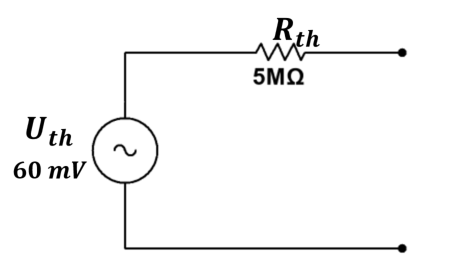

Signaalbronnen
Het theorema van Thevenin laat toe om een ingewikkelde schakeling te vervangen door een spanningsbron en een serieweerstand. Naargelang de behoefte kunnen dergelijke systemen ook vervangen worden via het theorema van Norton waarmee de schakeling wordt voorgesteld door een stroombron in parallel met een weerstand. Beide theorema’s maken het mogelijk om schakelingen te vereenvoudigen en alzo de analyse van vele schakelingen te vereenvoudigen en begrijpbaar te maken.
Wat is belangrijk?
Je zegt de definitie van een onafhankelijke bron op.
Je tekent een belastingslijn voor een Theveninschakeling.
Je omschrijft de betekenis van een werkpunt.
Je verklaart hoe een passieve transducer kan worden voorgesteld met een Thevein equivalent schema.
Onafhankelijke bronnen
Een signaalbron kan zowel een spannings- als een stroombron zijn en zowel DC als AC leveren. Een ideale onafhankelijke spanningsbron levert een spanning op die onafhankelijk is van de belastingsstroom. Een ideale stroombron levert dan weer een stroom op die onafhankelijk is van de spanning over zijn belasting. De waarde van een ideale onafhankelijke bron kan vastgelegd worden zonder te kijken naar eender welke andere parameter die aanwezig is in de schakeling. In realiteit kan een ideale bron niet worden verwezenlijkt maar in een aantal gevallen toch dicht worden benaderd. Denk maar aan de gestabiliseerde spanningsbron. Actuele bronnen kunnen voorgesteld worden als bestaande uit een ideale spanningsbron en een weerstand.
Hoe je een equivalent schema van Thevenin en Norton exact bepaald wordt doorverwezen naar de cursus van electric fundamentals. Het theorema van Thevenin is een nuttige manier om lineaire componenten in een schakeling te vervangen door een equivalente schakeling. De eis dat de te vervangen componenten door een Thevenin equivalent schema legt enkele beperkingen op in het gebruik van dit Theorema. Desondanks, als de te vervangen schakeling ongeveer lineair is, is het Thevenin schema toch nuttig om te gebruiken. Dit is het geval voor veel versterkerschakelingen die we in latere hoofdstukken zullen onderzoeken.
Belastingslijn
Een hulpmiddel om de werking van een schakeling te doorgronden is het gebruik van een belastingslijn. Belastingslijnen worden in deze paragraaf geïntroduceerd en bewijzen hun nut van zodra we halfgeleiders gaan instellen. Stel een lineaire schakeling met een Thevenin-equivalent zoals in figuur 1-7 (a) is weergegeven. De Theveninspanning bedraagt en de Theveninweerstand is gelijk aan . Aan dit Theveninequivalent wordt een belasting aangesloten van . In figuur 1-7 (b) is een zogenaamde belastingslijn getekend van deze schakeling. Hoe kom je nu aan deze belastingslijn? Laten we hiervoor nagaan wat er gebeurt als er verschillende belastingen worden aangesloten aan dit circuit. Veronderstel eerst dat de belasting een weerstand is van . De stroom die dan door de schakeling vloeit wordt dan enkel door de weerstand bepaald en kan als volgt worden gevonden:
Deze stroom is de maximale stroom die door de Thevenin-schakeling kan vloeien (zie figuur 1-7 (b)). Stel nu dat de belastingsweerstand gelijk is aan oneindig. De stroom door de schakeling is dan gelijk aan mA en de spanning over de belasting is dan gelijk aan de Theveninspanning (). Dit is het punt dat de maximale spanning over de belasting weergeeeft. Tussen deze twee punten kan een lijn worden getrokken. Deze lijn wordt de belastingslijn genoemd. In dit geval is dit de belastingslijnn voor de Theveninschakeling in figuur 1-7 (a). Aangezien de belastingslijn een rechte is, is het voldoende om de twee voornoemde punten te bepalen. De belastingslijn geeft alle mogelijke stroomwaarden en spanningswaarden weer die de Theveninschakeling kan leveren aan zijn belasting
 |
 |
|---|---|
| Schakeling met component en belasting | Belastingslijn van de schakeling in deel (a) |
Figuur 1-7: belastingslijn voor de Thevenin-schakeling in (a).
Een component heeft zijn eigen karakteristiek die beschreven kan worden in de karakteristiek. Deze curve geeft alle mogelijke instelpunten weer van de specifieke component in de schakeling. Aangezien de belastingslijn alle mogelijke instelpunten bevat, zal het snijpunt van deze twee lijnen het werkpunt zijn waarop de component is ingesteld. Het werkpunt geeft de stroomwaarde aan die door de component zal vloeien en de spanningswaarde die over de component komt te staan. Stel, zoals in figuur 1-7 (a) is te zien, een belasting van aan de Theveninschakeling wordt aangesloten. Het snijpunt van de belastingslijn met de weerstandslijn van geeft het werkpunt of instelpunt weer van deze belastingslijn. In de grafiek van figuur 1-7 (b) is te zien dat dit werkpunt gelegen is bij stroomdoorgang en spanning over . Ter controle rekenen we dit even na:
De stroom door de weerstand van :
De spanning over de weerstand van :
Dit concept is ook toepasbaar bij halfgeleiders zoals dioden, transistoren en FET’s.
Transducers
Voorbeeld 1-2
Een piëzo-elektrisch kristal wordt gebruikt in een trillingsmonitor. Stel dat als er geen belasting is aangesloten de output van de transducer gelijk is aan sinusgolf. Stel eveneens dat een technicus een oscilloscoop aansluit over de uitgang van deze transducer. De ingansimpedantie van de oscilloscoop bedraagt en op de oscilloscoop wordt een spanning waargenomen van .
Gevraagd :
Aan de hand van deze waarnemingen, teken het Thevenin-equivalent schema van de trillingsmonitor
Oplossing
De spanning die aan de uitgang verschijnt zonder dat een belasting is aangesloten, is de Theveninspanning Dit betekent dat
De impedantie van de oscilloscoop kan aanzien worden als de belasting van het Thevenin-equivalent. Via de formule van de spanningsdeler kan de Thevenin-weerstand bepaald worden:
Deze vergelijking oplossen naar levert :
Of na verdere uitwerking :
Het equivalent schema is gelijk aan :

Figuur 1-8: Thevenin-equivalent van het piëzo-elektrisch kristal
Het doel van een transducer is een bepaalde fysische grootheid (temperatuur, druk, …) om te vormen tot een vorm dat bruikbaar is voor een elektronisch systeem. Het signaal van een transducer is meestal kleinn en vereist een bepaalde versterking vooraleer het bruikbaar is voor verdere verwerking. Meestal wordt het signaal omgevormd tot een spanning, stroom of weerstand. Passieve transducers zoals rekstrookjes vereisen een afzonderlijke bron van elektrisch vermogen om te kunnen werken. Actieve transducers zijn zelf genererende devices die een klein gedeelte van de te meten fysische grootheid omtransformeren in een elektrisch signaal. Thermokoppels (thermocouplers) zijn hiervan een voorbeeld. Zowel passieve als actieve transducers kunnen via een Thevenin- of Norton-equivalent worden voorgesteld voor verdere analyse. Als de equivalente weerstand groot is, wordt meestal Norton toegepast vermits de schakeling een ideale stroombron benadert. Een pH-meter bijvoorbeeld heeft een hoge uitgangsweerstand. Hierdoor is een versterker met een hoge ingangsimpedantie nodig voor verdere verwerking. Daarnaast spelen de aanwezigheid van ruis, de frequentieresponse van het systeem eveneens een rol in de keuze van de versterker.
Test jezelf aangaande signaalbronnen
Wat is een onafhankelijke bron?
Wat is het verschil tussen een actieve en een passieve transducer?